Стилистики пространств
Тёплый Эдем
Детский уровень МОАГ. Садовый свет входит через широкие окна, скрытые лампы освещают своды, а там, где ребёнок касается поверхности, появляются дерево, пробка и гладкая керамика.
Два исходных интерьера

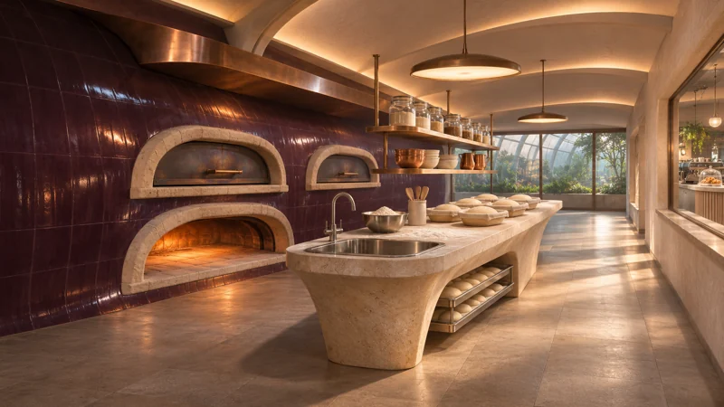
Пекарня

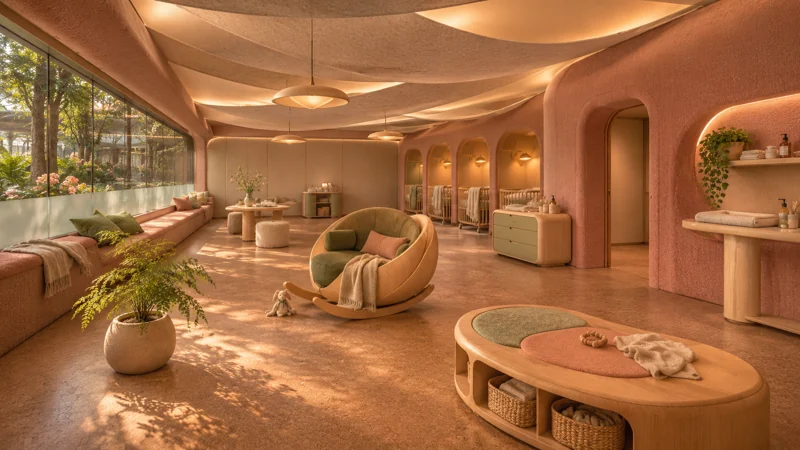
Ясли
Жизнь детского уровня

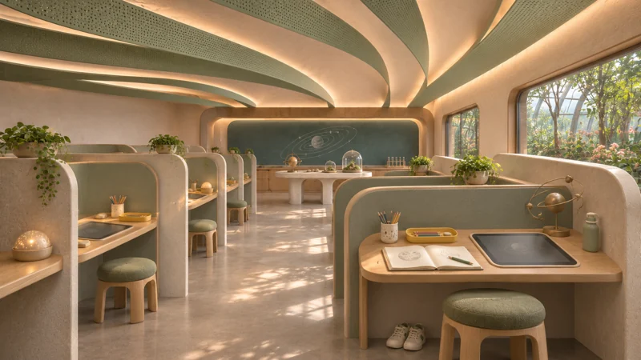
Учебная студия

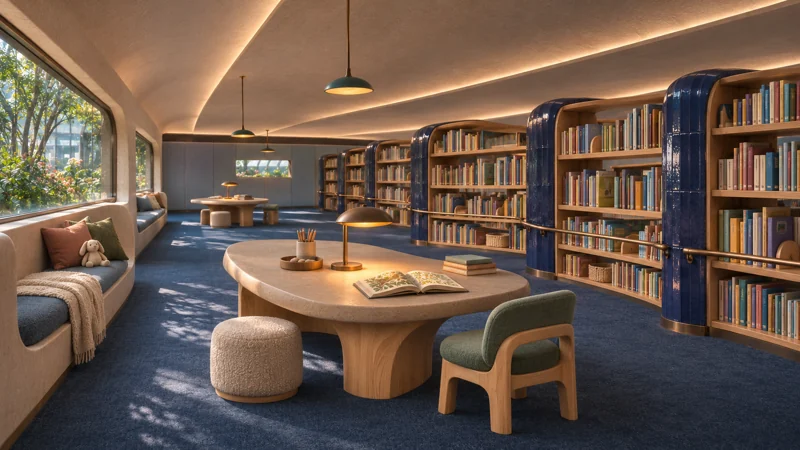
Библиотека

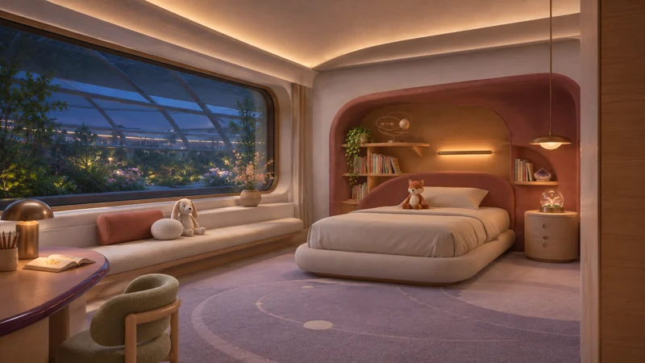
Спальня

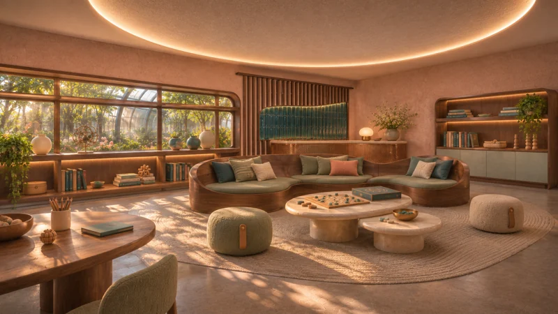
Общая гостиная

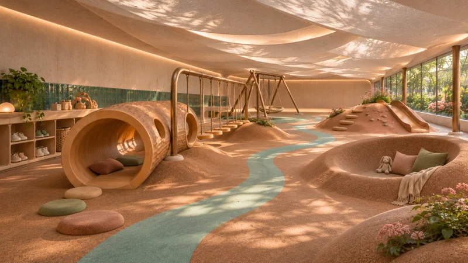
Игровой зал

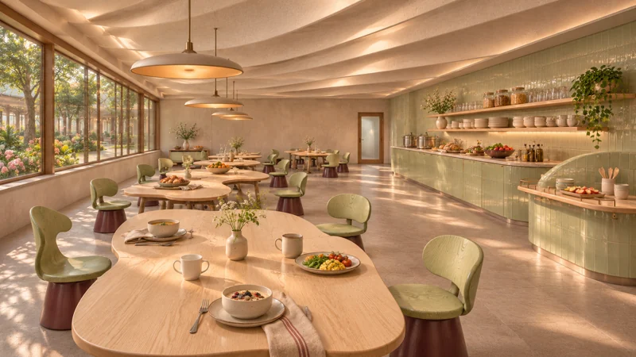
Детская столовая
Мастерские и службы

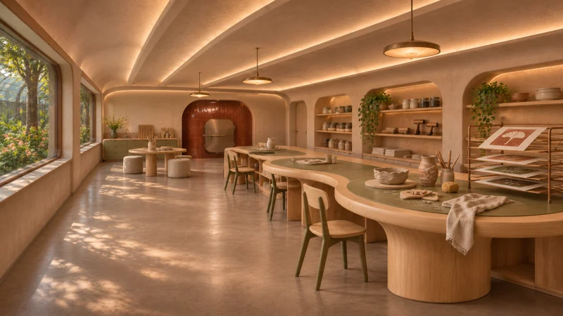
Мастерская керамики и печати

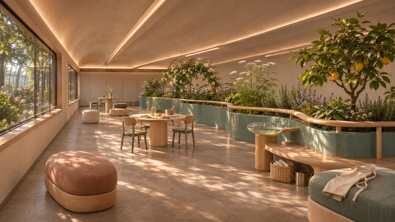
Садовая галерея

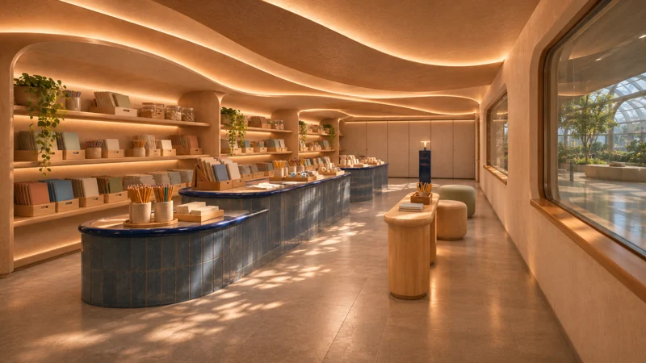
Лавка школьных принадлежностей

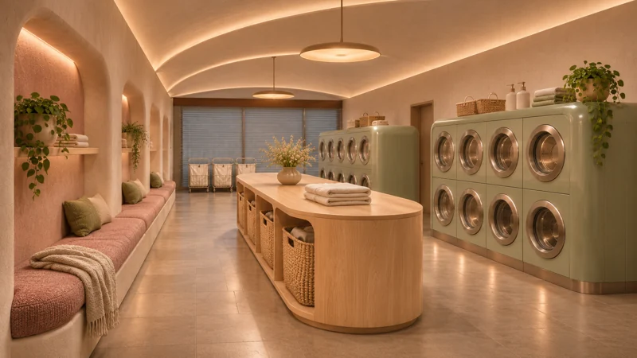